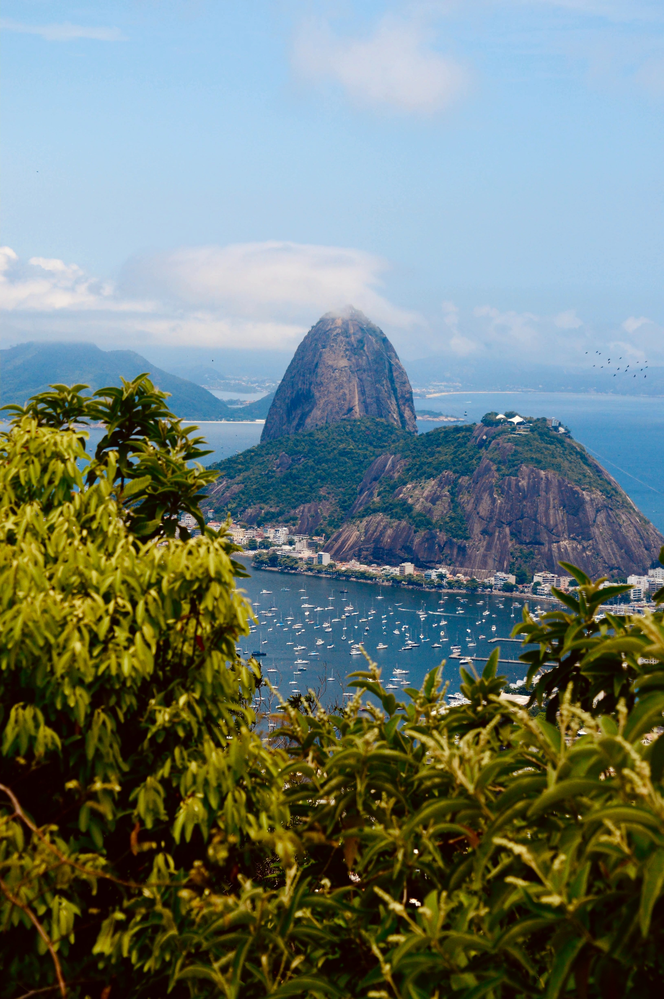
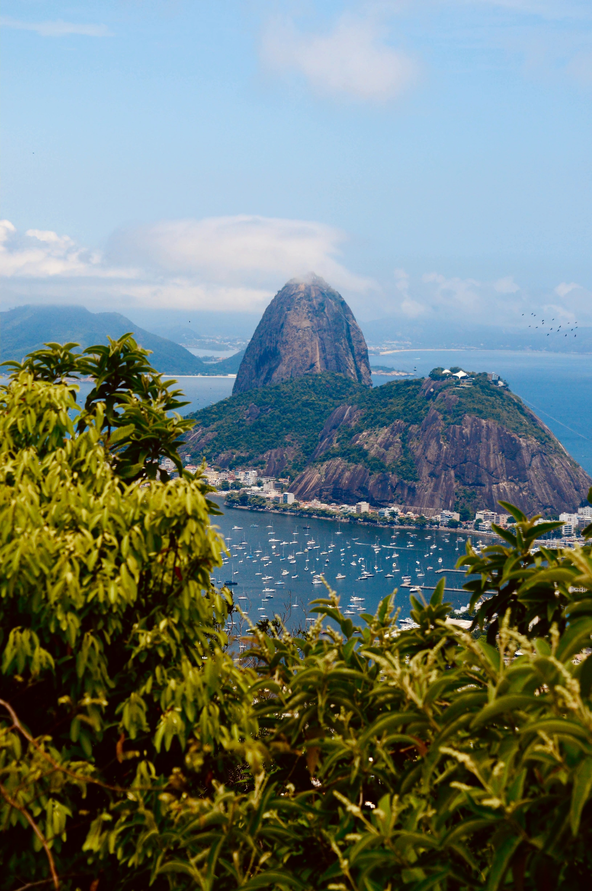

Standardpaket
Rio de Janeiro
Upplev en magisk vecka i hjärtat av Brasilien
Rio de Janeiro
Upplev en magisk vecka i hjärtat av Brasilien
Välkommen till den mest spännande veckan i ditt liv i Rio de Janeiro! Vår paketresa erbjuder dig en oförglömlig upplevelse i denna fantastiska brasilianska stad. Med vårt exklusiva paketpris för en vecka i Rio de Janeiro får du chansen att utforska alla de ikoniska sevärdheterna och njuta av stadens unika kultur, stränder och nattliv.
Att besöka Rio de Janeiro är en upplevelse som erbjuder en kombination av enastående naturskönhet, pulserande kultur, spännande historia och en unik livsstil. Det finns många goda skäl att överväga ett besök i denna fantastiska stad i Brasilien:
Fantastisk natur: Rio de Janeiro har en av de mest imponerande naturskönheter i världen. Från de berömda stränderna som Copacabana och Ipanema till det majestätiska Corcovado-berget med Kristus Frälsaren-statyn på toppen och den vackra Suikerloaf-bergen, erbjuder staden enastående utsikter och möjligheter till natursköna äventyr.
Karneval: Rio de Janeiro är känt för sitt spektakulära karneval, en av de största och mest kända festivalerna i världen. Karnevalet är fyllt med färgstarka paradfloatar, fantastiska kostymer, livlig musik och dansande människor som sprider glädje och feststämning i hela staden.
Kultur och musik: Rio de Janeiro är ett centrum för brasiliansk musik och kultur. Här kan du uppleva den livliga samban, besöka berömda samba-skolor, och njuta av livekonserter med traditionell brasiliansk musik som bossa nova och MPB (Musica Popular Brasileira).
Historiska sevärdheter: Staden har en rik historia och erbjuder en mängd historiska sevärdheter som det kejserliga palatset, São Bento-klostret och den historiska stadskärnan. Du kan även utforska de färgglada och pittoreska trapporna i Selarón, skapade av konstnären Jorge Selarón.
Stränder och avkoppling: Rio de Janeiro har några av världens mest kända stränder. Här kan du njuta av sol och sand på Copacabana och Ipanema, simma i det azurblå havet eller bara koppla av på strandpromenaderna och njuta av den avslappnade atmosfären.
Vänliga människor: Invånarna i Rio de Janeiro, kallade "cariocas", är kända för sin vänlighet och gästfrihet. Du kommer att känna dig välkommen och mötas av leende ansikten under hela din vistelse.
Fotboll: För fotbollsentusiaster är Rio de Janeiro en drömdestination. Besök Maracanã-stadion, en av världens mest ikoniska fotbollsarenor, och upplev den passionerade atmosfären vid en match.
Alltså är Rio de Janeiro en stad som har något att erbjuda alla. Oavsett om du är intresserad av natur, kultur, historia eller bara vill koppla av på stranden, kommer du att hitta något som tilltalar dig i denna förtrollande brasilianska stad.
Flyg och hotell (pris från 8,343): Arena Copacabana är ett prisvärt alternativ som ger dig valuta för pengarna utan att kompromissa med kvaliteten. Oavsett om du besöker staden för affärer eller nöje, kommer du att uppskatta det bekväma boendet och den gästvänliga atmosfären som Arena Copacabana har att erbjuda.
Sightseeingturer: Under din vecka i Rio kommer du att delta i tre olika och spännande sightseeingturer som tar dig till några av stadens mest kända platser. Besök Kristus Frälsare-statyn på Corcovado-berget och beundra den fantastiska panoramautsikten över staden. Utforska den historiska stadsdelen Santa Teresa och ta en hisnande linbana till Sugarloaf Mountain.
Samba och kultur: Du kommer att få chansen att uppleva den vibrerande sambakulturen i Rio de Janeiro. Delta i en sambashow och lär dig de traditionella sambadansstegen. Besök också stadens bästa konstmuseer och ta del av den rika kulturen.
Stränder: Rio är känt för sina vackra stränder, och du kommer att ha gott om tid att njuta av solen och havet. Koppla av på Copacabana och Ipanema-stränderna och prova de lokala strandaktiviteterna som fotboll och beachvolleyboll.
Nattliv: Rio de Janeiro är känt för sitt pulserande nattliv. Vi ordnar för dig att uppleva de bästa nattklubbarna och barerna i staden, där du kan dansa till sambarytmer och prova på utsökt brasiliansk mat och dryck.
Detta paket är perfekt för både avkoppling och äventyr, och det ger dig möjligheten att uppleva allt som Rio de Janeiro har att erbjuda. Boka din vecka i paradiset nu och skapa minnen för livet i denna fängslande stad. Rio väntar på dig!

 
